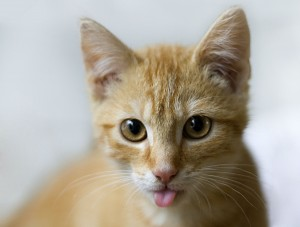
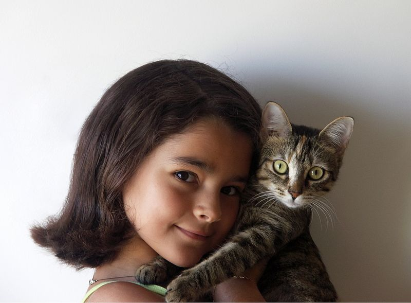

1. Cats are the most popular pet in the United States: There are 88 million pet cats and 74 million dogs.
2. There are cats who have survived falls from over 32 stories (320 meters) onto concrete.
3. A group of cats is called a clowder.
4. Cats have over 20 muscles that control their ears.
5. Cats sleep 70% of their lives.
6. A cat has been mayor of Talkeetna, Alaska, for 15 years. His name is Stubbs.
7. And one ran for mayor of Mexico City in 2013.